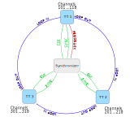

Synchronizer
Overview
The Swabian Instruments’ Synchronizer allows for connecting up to 8 Time Tagger Ultra devices to expand the number of available channels. The Synchronizer generates a clock and synchronization signal to establish a common time-base on all connected Time Taggers. The Time Tagger software engine creates a layer of abstraction: the synchronized Time Taggers appear as one device with a combined number of input channels.
Requirements
Successful synchronization of your Time Taggers requires:
You have obtained the Synchronizer hardware.
Your Time Tagger Ultra has hardware version 1.2 or higher. In case you have an older device and want to synchronize it with more units, please contact our support or sales team www.swabianinstruments.com/contact .
Your PC has a sufficient number of USB3 ports for direct connection of every Time Tagger. The Synchronizer itself does not require a USB connection.
You have a sufficient number of SMA cables of the same length. You need three cables for each Time Tagger. For more details, see in the section Cable connections.
You have installed the Time Tagger software version 2.6.6 or newer.
Cable connections
The Synchronizer provides a common clock signal for every Time Tagger as well as the synchronization signals. Furthermore, Time Taggers have to be connected to each other in a loop. The connection sequence in the loop defines the channel numbering order. An additional feedback signal is required to identify which of the Time Taggers in the loop is the first.
Note
After the release of the Synchronizer, we have changed the connector labels on the front panel of Time Tagger Ultra. In this section, we use the new labeling scheme, while showing the corresponding old labels in brackets: NEW_LABEL (OLD_LABEL).
Synchronizer |
Time Tagger |
Description |
|---|---|---|
CLK OUT <N> |
CLK IN (CLK) |
500 MHz clock |
SYNC OUT <N> |
SYNC IN (AUX IN 1) |
Synchronization data |
FDBK IN |
FDBK OUT (AUX OUT 2) |
Feedback from one Time Tagger |
Every Time Tagger should have its LOOP OUT (AUX OUT 1) connected to the LOOP IN (AUX IN 2) of next Time Tagger, eventually forming a signal loop. The following diagram visualizes the connections required for the synchronization of three Time Taggers.
{kind=link}
Warning
For reliable synchronization, the cables for CLK and SYNC signals shall have a length difference below 4 cm. We recommend using the same cable type for these two signals.
Additionally, we recommend connecting every Time Tagger directly to a USB3 port on the same computer. If your computer does not have a sufficient number of USB3 ports, avoid using USB hubs as they limit the data bandwidth available for every Time Tagger. Instead, please install an additional USB controller card into your computer. While there is a wide variety of USB3 controllers, you have to look for one that can deliver full USB3 bandwidth at every USB port simultaneously. Typically, such USB controllers have an individual chip for each USB port and require a PCIe x4 slot on the computer’s motherboard..
Using an external reference clock
The Synchronizer has a built-in high accuracy and low noise reference oscillator and distributes the clock signals to all attached Time Taggers. In case you want to use your external reference clock, you have to connect it to the REF IN connector of the Synchronizer. Additionally, the Synchronizer can supply 10 MHz reference signal through its REF OUT output. Note that REF OUT is disabled when an external reference signal is present at the REF IN.
Parameter |
Value |
|---|---|
Coupling |
AC |
Amplitude |
0.3 … 5.0 Vpp |
Frequency |
10 MHz |
Impedance |
50 Ohm |
Parameter |
Value |
|---|---|
Coupling |
AC |
Amplitude |
3.3 Vpp (1 Vpp @ 50 Ohm) |
Frequency |
10 MHz |
Software and channel numbering
The Time Tagger software engine automatically recognizes if a Time Tagger belongs to a synchronized group. It will also automatically open a connection to all other Time Taggers in the group and present all devices as a single Time Tagger. There is no specific “master” device, and the connection to the synchronized group can be initiated from any of the member Time Taggers.
The connection is opened as usual using createTimeTagger(), and optionally you can specify the serial number of the Time Tagger.
tagger = createTimeTagger()
The tagger object provides a common interface for the whole synchronization loop, and all programming is done in the same way as for a single Time Tagger. Note that, compared to a single Time Tagger, the channel numbering scheme is modified for easy identification by a user. The channel number consists of the Time Tagger number in the loop and the input number on the front panel. The channel number formula is
CHANEL_NUMBER = TT_NUMBER*100 + INPUT_NUMBER
As an example, let us assume we have three Time Tagger Ultra 18 in a synchronization loop. The Time Tagger that provides the feedback signal to the Synchronizer has sequence number 1, and its channel numbers will be from 101 to 118. The channels of the next Time Tagger will have numbers from 201 to 218, and so forth.
Note
In case the channel numbers on your Time Tagger Ultra start with 0, in the synchronized group, the channel 0 will appear as N01, where N is the Time Tagger number. See more about channel numbering scheme in the section Channel Number Schema 0 and 1.
You can request the complete list of available channels with the TimeTagger.getChannelList() method.
from TimeTagger import createTimeTagger, TT_CHANNEL_RISING_EDGES
# Connect to any of the synchronized Time Taggers
tagger = createTimeTagger()
# Request a list of all positive edge channels
chan_list = tagger.getChannelList(TT_CHANNEL_RISING_EDGES)
print(chan_list)
>> [101, 102, ... , 317, 318]
Incomplete cable connections
The software engine attempts to detect incorrect or incomplete connections of the cables in the synchronization loop. In case some connections are missing or were disconnected during operation, the software engine will show a warning and the data transmission from the disconnected Time Tagger will be filtered out until a valid connection is restored. Issues with the cable connections and synchronization status are indicated using the status LEDs on the front panel of the Synchronizer and the Time Tagger. See more in section Status LEDs and troubleshooting.
Buffer overflows
The synchronization loop also propagates the buffer overflow state from any Time Tagger to all members of the loop. On the software side, the buffer overflow has the same effect as for a single Time Tagger. See, Overflows.
Limitations
Conditional filter
The conditional filter cannot be applied across synchronized devices. However, it can still be enabled for each Time Tagger independently.
In case you want to use the conditional filter across devices, you have to send the signal to be filtered (for example, your laser sync) to every Time Tagger where trigger signals are connected. In software, you have to choose the corresponding input for time difference measurements.
Internal test signal
The internal test-signal generator is a free-running oscillator independent from the system clock. Therefore, the test signals are not correlated between different Time Taggers, even if the synchronization loop is set up correctly. If you try to measure a correlation with the internal test signal across two different Time Taggers, you will see a flat histogram. On the other hand, performing the same measurement with two input channels of the same Time Tagger will result in a jitter-limited correlation peak.
Status LEDs and troubleshooting
The front panel of the Synchronizer has several LEDs that indicate operation status.
LED |
Color |
Description |
|---|---|---|
Power |
dark |
No power provided |
– |
solid green |
Powered on |
Status |
dark |
Warming up |
– |
solid green |
Normal operation. |
FDBK IN |
solid green |
Normal operation |
– |
solid red |
Invalid feedback signal |
REF IN |
dark |
No external reference signal |
– |
solid green |
Valid 10 MHz reference signal |
– |
solid red |
Invalid reference signal |
REF OUT |
dark |
Output is disabled when using external reference signal |
– |
solid green |
Output enabled |
The LEDs of the Time Tagger Ultra also indicate the state of the synchronization loop. See more details in section LEDs.
Synchronizer with only one Time Tagger
You can use the Synchronizer also with only one Time Tagger for two application scenarios:
Long term clock stability
The Synchronizer has a very good built-in clock which you can benefit from even when you have only one Time Tagger. Just connect any clock output of the Synchronizer to the clock input of the Time Tagger to benefit from the Synchronizer clock, which matters especially measuring long time differences.
Absolute clock timestamps
By connecting all signals from the Synchronizer as shown in Cable connections (LOOP IN and LOOP OUT must be shorted), the timestamps in the Time Tag stream will be referenced to the power-in time of the Synchronizer. Even when you disconnect from the Time Tagger, e.g., power down, USB timeout, the returned time tags are still referenced to the start time of the Synchronizer.
To verify that this configuration is active, you will see a warning message in the console on createTimeTagger() that you are using the Synchronizer with only one Time Tagger.